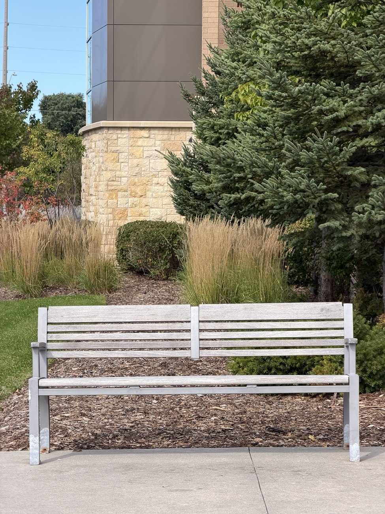
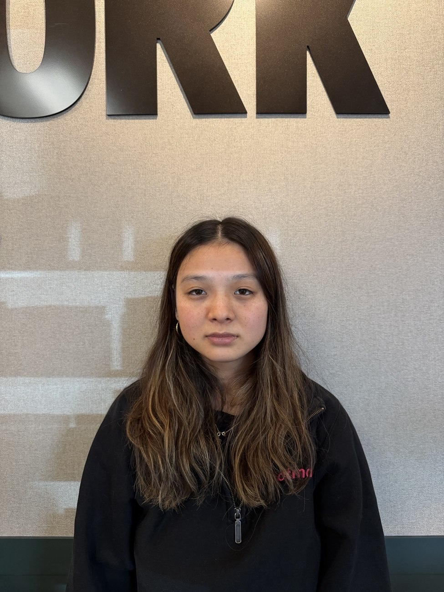
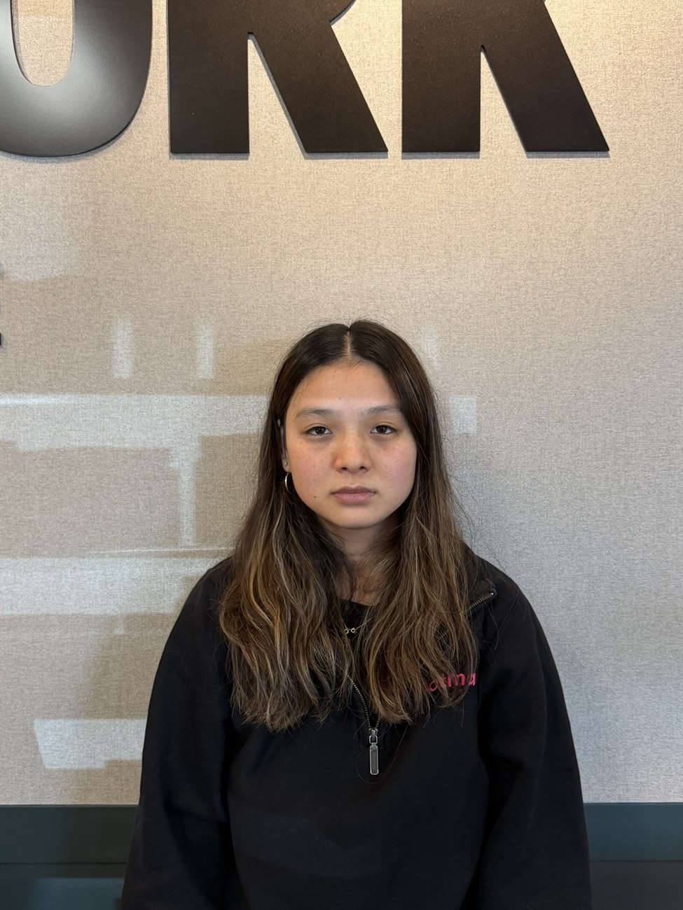
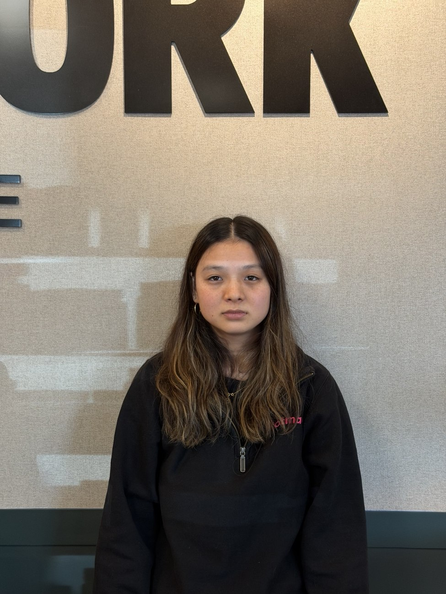
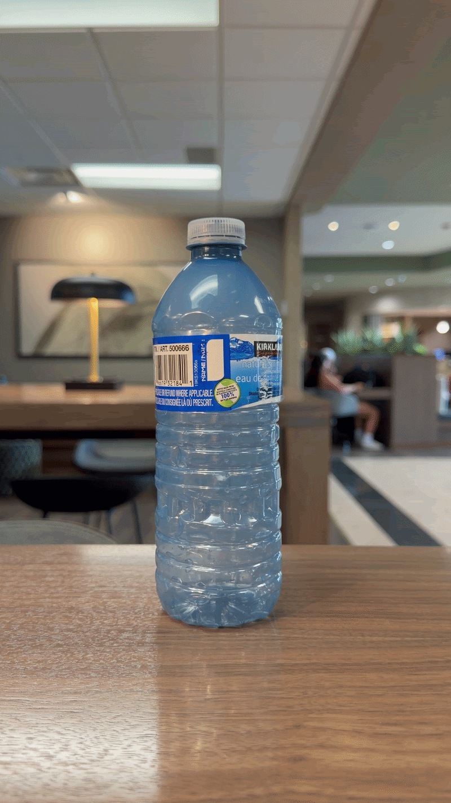

Serena Beddoe
For the first picture, I stood close to the subject and used the lowest zoom. I then stepped back and zoomed in for the second photo, and repeated this for the third photo.



The further away the photo was taken, the less the face was distorted. This is because when the camera is close to the subject, the depth differences between facial features are large in comparison to the distance from the camera. This makes features closer to the camera look disproportionately larger. When I stood further away, the depth differences become less significant, resulting in less distortion.
I took Image 1 from farther away at 4x and then moved toward the bench and took Image 2 at 1x.

The first photo appears flatter because, from farther away, the depth differences within the scene are small relative to the distance from the camera. When I moved closer, the depth differences became more significant, causing closer parts of the bench to appear larger than farther parts, making the depth of the bench more noticeable.
Here is an example of a dolly zoom shot I created using stills I took of a a water bottle by zooming in as I moved the camera away from the bottle.
